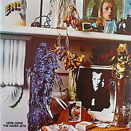
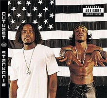
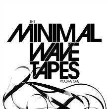
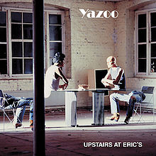
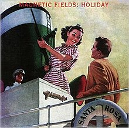
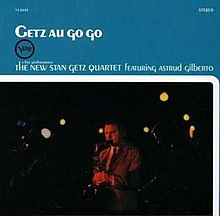
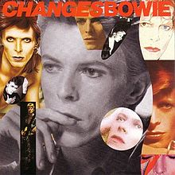
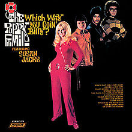
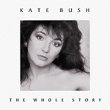
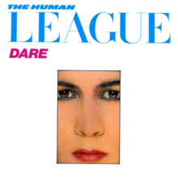

"Here Come the Warm Jets" Image courtesy of Wikipedia
Here Come the Warm Jets - Brian Eno - 1974
This was the first album I ever got from Eno. I had always been in to Bowie, but I had a deep glam phase that started in my late teens after seeing "Velvet Goldmine". At first glance, this would appear an enduring trace of that, but it's not glam... Not by any stretch. And it doesn't take more than a few seconds of the first song to confirm that this is uncharted territory. This album is sonically beautiful/brilliant and extremely exciting to listen to. It's a strict departure from his role as the synth-architect of Roxy Music. It is, however, still as dynamic and compelling as the first two Roxy Music albums. There is very little fault in the first five albums of Brian Eno's catalogue, but being the first one I ever heard I figured it should be the one I pick. I got it about 16 years ago, have listened to it scores, if not a hundred times and I still love it as a complete, sophisticated, genre-defining piece of work.
Stankonia - Outkast - 2000
Outkast hasn't put out a bad record. Big Boi and Andre's energies play well off of each other, and they let each other shine at what they bring to the table. There's a lot of different energies and they flow from philisophical to gangsta back to philisophical to afro-futurist seamlessly. It is a riveting work. It meshes the future and past. It also features a ton of cameos by a LOT of cool people- specifically Erykah Badu. This record has ties in my memory to high school, driving around with my friends. Hanging out at the mall, when malls were still a "thing". Try listening to "Humble Mumble" and not getting hyped!
Minimal Wave Tapes Vol. 1 - Various Artists - 2010
I'm in a band. Clearly from this project music is one of my major passions. This one time I was record shopping in Columbia, MO- the town where I met my bandmate and husband- and this guy Ted says "Hey, have you heard this comp? It sounds like your band." and I was of course like "whaaaaaaaa??!?!". I thought I knew a lot about 80s music. Man, oh man, was I wrong. It is a comp of tape and 7" releases by one off bands that never got past issues past a couple hundred. I bought it immediately and it was on constant rotation for a good five months solid. All my friends borrowed it or bought it from hearing it at my house. It's a jammer, from end to end, and I make no qualms about saying so. It also gave me a new life in a genre that I had yet to explore in *literally* my favorite kind of music.
Upstairs At Eric's - Yaz(oo) - 1982
Soooo picking this was a tossup between 'Speak and Spell' by Depeche Mode and this album, and I went with this one. Vince Clarke, the synth arranger both for Speak and Spell and Yaz, has very specific and kind of definitive sound. So much so that Speak and Spell and this album almost sound like they could be the same band with a different singer. I chose this records because I love Alison Moyet's voice. Her voice is so smooth and soulful and unique. I have always loved "Situation" since I was a kid, and I'm sure you would know the hook if you heard it. The whole record is solid gold and I often spin cuts from the b-side.
Holiday - Magnetic Fields - 1993
I might go out on a limb and say that this is my favorite Magnetic Fields album, which is saying a lot- they have a LARGE catalogue, and a lot of solid material. There is a certain nonchalance and... whimsy(?) that I love about this record. I adore the way it sounds. I love that you can't really place the synth sounds. I love the romance. I love Stephen Merritt's deadpan delivery of incredibly evocative and cleverly written lyrics. I mean, there's even a song called 'Desert Island' on it, which btw, is a stand out track.
Getz Au Go Go – (live album) the New Stan Getz Quartet feat. Astrud Gilberto – 1964
This is the smoothest jazz. I love Stan Getz. He's somehow makes the already buttery tones of the saxaphone even smoother. I adore Bossa Nova as a style, but this record goes beyond that. It features a super young Astrud Gilberto, who was just 19 or 20 at the time. Her timidity carries over into an almost aloofness in her deliveries of tone. The chemistry that brings to that sax is ridiculous. She would become a staple in my collection from her many studio tracks, but I love to hear her and the other musicians in this raw and very receptive environment.
ChangesBowie – David Bowie – 1990
I literally got this record in 1990. I was obsessed with David Bowie from an early age. Very early. I had a copy of "the Glass Spider" tour concert on a VHS and watched it like modern kids watch Frozen. I was taken with his presence, his music, the artistic nature of the stage show he had- there were dancers doing some reeeeeally cool stuff. I was obsessed with the movie Labyrinth (and pretty much everything Jim Henson did). When this came out my parents bought it, but I played it. Over and over and over and over. I still have it. My original copy on clear vinyl. I chose this because of that fact, as well as the fact that I couldn't narrow down any one of his records to being my favorite. It's incredible for a person to have a career that spans 50 years and literally for the most part it's a solid body of work. I literally cried for a solid week when he passed and still catch myself tearing when I think about him in any depth.
Which Way You Goin, Billy? – the Poppy Family feat Susan Jacks – 1970
This record is a mix up. It's kind of a compilation of tracks that were recorded over a three year span, and a band can change their sound a lot in three years. There is a lot of 60's psychedelia, but also early 70's soft country pop sound-sometimes at the same time. It's all over the place, but just an insanely good record. It took me a long time to come around to it, I think, because I was so jarred by the country/psych aspect of it, but one day I was at work in the laundry room with my headphones in and 'No Blood in Bone' came on and the intro made me *literally* drop what I was doing. When things make me stop in my tracks I generally investigate, and came to find it on that album. It's solid gold pop-psychedelic-country and I am here for it.
The Whole Story – Kate Bush – 1986
Kate Bush is straight up bad ass babe goals. When she was discovered her first record label sell her as a sex symbol, to which she replied with "no thanks" for lack of a better term. They canceled her contract and tried to break her down psychologically. She immediately turned around and signed with London. She never underestimated her worth and artistic vision. She had a recording studio on the premises of her home by her third record and held tight grip on the reigns of creative control in her music. She is a massive influence to me. This comp is a retrospective of her first ten years and holds some true sonic gems.
Dare – The Human League - 1982
This is dollar bin regular, and I'll never understand why. I chalk that up to there being so many copies of it based on the popularity of "Don't You Want Me?" which was a billboard number 1 in 1982. The whole album is stellar, though, and I can't think of a better end to this list than this album. I have two copies I love it so much. It is the perfect summary of the sounds of the time, and Phil Oakeys dramatic vocals are a huge inspiration to me. The songs are extremely catchy, danceable and celebrations of joy.